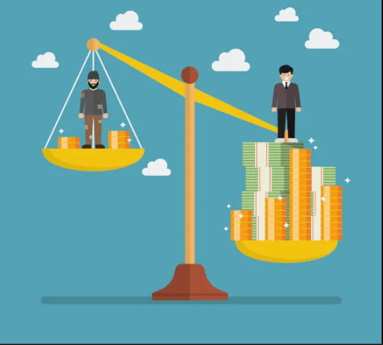
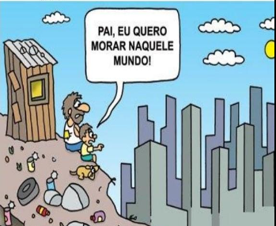

A desigualdade social é tudo aquilo dentro das relações da sociedade, presente em todo o mundo. Faz parte das relações sociais, pode ocorrer por: questões econômicas, de gênero, de cor, de crença, de círculo ou grupo social. Essa desigualdade prejudica e limita o status social dessas pessoas, além de seus direitos básicos, como: educação e saúde de qualidade, à propriedade, ao trabalho, à moradia, ter boas condições de transporte e locomoção, entre outros.
Lugares em que as pessoas são diferentes, preferem vestir roupas de determinado jeito ou viver sua vida de jeitos diferentes não são desigualdades. A desigualdade ocorre no acesso aos direitos, (como foi dito anteriormente) mas principalmente nas oportunidades.
Logo, as pessoas que são de classe socioeconômica mais favorecida, tem direito a melhores oportunidade, mais acessos, melhores do que pessoas menos favorecidas. É um ciclo vicioso, pois eles se mantêm com privilégios e em um círculo restrito, relacionando-se por gerações a fio. O questionamento é: o que aqueles que estão à margem dessa bolha social fazem?

Por quê a desigualdade social ocorre?
Racismo estrutural.
Discriminação de gênero.
Alta tributação de impostos.
Desequilíbrio da estrutura social.

Como pode ser combatido e quais seus tipos?
Para reduzir o abismo entre ricos e pobres pode ser feito: a promoção dos direitos e à igualdade econômica das mulheres, ao pagamento de salários mínimos justos, a contenção dos salários de executivos e o objetivo de o mundo todo ter serviços gratuitos de saúde e educação, segundo a ONG Oxfam.
A Desigualdade Social pode envolver: Desigualdade econômica; desigualdade regional; desigualdade racial e desigualdade de gênero.